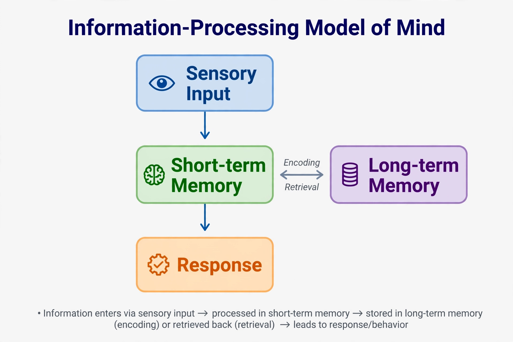

From Wikipedia, the free encyclopedia
| Cognitive revolution | |
|---|---|
 The information-processing model became the revolution's guiding metaphor | |
| Period | 1950s–1970s |
| Fields | Psychology, linguistics, computer science, philosophy, neuroscience |
| Key figures | Noam Chomsky, George Armitage Miller, Ulric Neisser, Herbert Simon, Allen Newell, Jerome Bruner |
| Displaced | Behaviourism |
The cognitive revolution was a movement in psychology and related disciplines, beginning in the 1950s, that re-established the scientific study of mental processes — perception, memory, attention, reasoning and language — after decades in which behaviourism had restricted psychology to observable stimuli and responses. It gave rise to modern cognitive psychology and, together with linguistics, computer science, neuroscience, anthropology and philosophy, to the interdisciplinary field of cognitive science.
In the first half of the 20th century, especially in the United States, behaviourists such as John B. Watson and B. F. Skinner argued that inner mental states were unobservable and therefore unsuitable for science. Psychology was to study learned behaviour alone. Even before the revolution, exceptions existed — Gestalt psychology, Jean Piaget's studies of child development, and Frederic Bartlett's work on memory — but they stood outside the American mainstream.
The revolution drew on information theory, cybernetics and the digital computer, which supplied a working metaphor: the mind as a system that takes in, stores, transforms and outputs information. Mental representations and processes could be studied rigorously by timing responses, measuring errors and building computational models. Landmark methods included Donald Broadbent's dichotic listening studies of attention and research on short-term memory that fed into models such as the Atkinson–Shiffrin memory model (1968).
By the 1970s cognitive psychology was the dominant paradigm in experimental psychology. It reshaped education (see constructivism), influenced the developmental psychology of Vygotsky's rediscovery, and laid foundations for cognitive neuroscience, cognitive therapy and much of artificial intelligence. Historians debate whether the change was truly revolutionary or a gradual evolution, but the term remains standard.